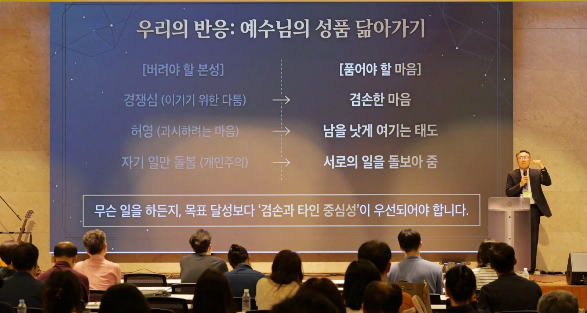

46회 CMF 학사수련회 말씀 2(금 저녁) · 서성용 목사 · 본문 빌2:1-15 · 시리즈 「그리스도를 위한 특권」 둘째 강 · 부제 "상처입은 선의를 넘어, 빛나는 공동체로 나아가는 여정"

SECTION 01
개요·핵심 논지
copy
첫째 강이 특권을 재정의했다면(믿는 특권 + 고난받는 특권), 둘째 강은 공동체의 깊은 딜레마에서 출발한다 — "우리는 주의 일을 '함께' 하면서도 '한마음'이 되기 어렵습니다." 주의 일(사역과 헌신)과 한마음(관계와 평안) 사이가 갈라져 있고, 급변하는 사회에서 개인의 주장은 강해지고 다양해진다. 여는 질문: "선한 의도로 모인 우리가 왜 자꾸 부딪히고 상처받게 될까요?"
성경의 요구는 타협이 없다 — 같은 생각(동일한 목적지)·같은 사랑(동일한 온도)·한 마음(뜻을 합한 연합)(빌 2:2). 이것이 어떻게 가능한가에 대한 답이 설교 전체다: 예수님의 마음을 알고, 이해하고, 닮는 데까지 가야만 가능하다(2:5). 진단(선한 의도가 왜 상처가 되는가)과 처방(그리스도의 하강 궤적·자기비움)과 동력(우리의 책임 + 성령의 도우심)이 차례로 놓이고, 결론은 2:15 — 어둠 속에서 별처럼 빛나는 공동체다.
SECTION 02
구조·전개
copy
| 단계 | 내용 | 도달점 |
|---|---|---|
| 딜레마 | 주의 일 ↔ 한마음의 균열 | 선한 의도로 모였는데 왜 상처받는가 |
| 요구 | 빌 2:2 — 같은 생각·같은 사랑·한 마음 | 예수님의 마음을 닮는 데까지 가야 가능 |
| 관점 이동 | 빌 1장(과업·결과) vs 2장(태도·성품) 패러다임 표 | "1장의 결과 중심 마인드로 2장의 공동체 생활을 하려 할 때 갈등이 시작된다" |
| 진단 ① | 선한 동기의 출발점(2:1 — 격려·위로·교제·긍휼) | 동기가 좋다고 결과까지 좋은 것은 아니다 |
| 진단 ② | 선한 의도의 함정: 순수한 출발 → 왜곡의 필터 → 어긋난 결과 | "상대방의 언어로 사랑하지 않으면, 나는 '충분히 사랑했다'고 착각할 뿐" |
| 처방 ① | 기준의 재설정 — 내 마음·내 방식·나의 사랑의 언어 → 예수님의 마음 | "선한 동기보다 더 중요한 것은 기준이다" |
| 진단 ③ | 고장 난 엔진 — 렘 17:9, 이기적 본성, 제자들의 3년 실패 | 우리 힘으로는 불가능하다 |
| 처방 ② | 그리스도의 하강 궤적(2:6-8) 4단계 + 케노시스(ἐκένωσεν) | 인간 본성은 올라가려 하지만 예수의 마음은 내려간다 |
| 예화 | 수석 바이올린 연주자의 반주 | "진정한 힘은 남을 빛나게 하기 위해 자신의 볼륨을 줄이는 데 있다" |
| 실증 | 로마 감옥의 역설적 결정 — 디모데·에바브로디도 파송 | 바울·에바브로디도·빌립보 교회의 3중 자기비움 |
| 적용 | 경쟁심→겸손 · 허영→남을 낫게 여김 · 개인주의→서로 돌봄 | "목표 달성보다 겸손과 타인 중심성이 우선" |
| 동력 | 우리의 책임(2:12, 노력) + 성령의 도우심(2:13, 은혜) | 온전한 하나 됨 |
| 결론 | 거룩한 백성의 정체성 vs 뒤틀린 세상의 문화 · 빌 2:15 | 어둠 속에서 별처럼 빛나는 공동체 |
| 나눔 | 조별 질문 | 버려야 할 본성과 품어야 할 예수님의 마음은 무엇인가 |
★ KEY INSIGHT
핵심 개념·주장 ↔ 근거
copy
★ KEY INSIGHT
빌립보서 1장과 2장 — 관점의 이동
copy
1장의 '결과 중심' 마인드로 2장의 '공동체 생활'을 하려 할 때 갈등이 시작됩니다.
이 설교의 해석학적 축이다. 1장의 문법에서는 결과(복음 전파)가 우선이어서 시기와 경쟁의 동기조차 "전파되는 것은 그리스도니 기뻐하리라"로 수용됐다(어제의 말씀 1). 그러나 2장은 공동체 안의 태도와 성품을 다루며, 여기서는 경쟁심과 허영이 배제되고 오직 겸손만 허용된다. 적용 영역도 복음 전파의 현장에서 교회·가정·직장 등 신앙생활 전반으로 넓어진다. 갈등의 발생 지점이 정확히 짚인다 — "1장의 '결과 중심' 마인드로 2장의 '공동체 생활'을 하려 할 때 갈등이 시작됩니다." (일 잘하는 의료인 공동체를 향한 진단으로 이보다 정확한 문장이 없다.)
설교에서는 이 대비에 바울 자신의 이력이 붙었다 — 바울도 본래 굉장히 목표지향적인 사람이어서 바나바와 싸우고 헤어진 뒤 다시 합치지 못했는데, 영혼 구원에 달려가다 자기 안에 예수님의 마음이 없음을 깨달아 갔기에 빌립보 교회를 향해 이런 말을 할 수 있었다는 것이다. CMF를 향한 바깥의 시선도 이 자리에서 나왔다. 설교자는 14년간 열두 번 의료선교에 동행했다며 필리핀 다바오(이슬람 지역)의 경험을 들었다 — 히잡을 쓴 여인들이 '무료 진료'라는 명분이 생기자 남편의 허락을 받고 교회에 왔다. "명분이 있으면 교회에 올 수 있어요." 복음이 들어갈 수 없는 곳을 여는 의료선교의 힘, 즉 목표의 선함과 강력함은 인정된다 — 문제는 그 선한 일을 하는 우리 안의 마음이다.
SECTION 05
선한 의도가 상처가 되는 메커니즘
copy
상대방의 언어로 사랑하지 않으면, 나는 '충분히 사랑했다'고 착각할 뿐 상대방은 아무것도 느끼지 못합니다.
2:1의 동기들(격려·위로·교제·긍휼)은 소중하다 — 그러나 동기가 좋다고 결과까지 좋은 것은 아니다. 순수한 출발이 왜곡의 필터 — '내가 하고 싶은 대로', '나만의 사랑의 언어'로 표현 — 를 지나면 상대는 불편함을 느끼고 오해와 상처가 발생한다. 슬라이드의 결론 문장: "상대방의 언어로 사랑하지 않으면, 나는 '충분히 사랑했다'고 착각할 뿐 상대방은 아무것도 느끼지 못합니다." 그래서 처방은 동기 강화가 아니라 기준의 재설정이다 — 버려야 할 기준(내 마음에 끌리는 대로, 내가 하고 싶은 방식, 나의 사랑의 언어)에서 취해야 할 기준(예수님의 마음, 예수님이 보여주신 겸손, 타인을 향한 기준)으로. "2절이 말하는 '한 마음'의 분명한 모델은 오직 예수님의 마음입니다."
실연에서 이 진단은 겹겹의 실화로 살이 붙었다. 설교자는 결혼 29년 차의 고백으로 시작한다 — 대학 졸업 이틀 뒤 결혼할 만큼 사랑해서 결혼했는데도 신혼에 무수히 싸웠고(부부 MBTI 네 글자가 전부 반대), 그래서 "결혼은 한마음이 되려고 끊임없이 노력하는 것"이라고 정의한다. 하나님이 세우신 가장 작은 교회가 부부인데, 에덴의 그 첫 교회(아담과 하와)는 선한 일이 아니라 악한 일에 한마음이 됐다. 세대 문제도 실감으로 짚었다 — 이제 한 세대를 5년 단위로 끊는다는데, 4년 터울 세 자녀가 코로나를 전혀 다르게 통과한 자기 집이 그 증거다(2002년생 큰딸은 대학 2년을 침대 위 온라인 수업으로 보냈다). 그리고 교회 행사 뒤의 홍역 — 전교인 수련회를 치르고 나면 꼭 상처받은 사람이 나와 담임목사가 커피 쿠폰을 들고 수습하러 다니는데, 들여다보면 상처를 준 쪽도 선한 의도였다. 목표지향적인 사람이 직장의 말버릇("이거 좀 바꿔와")을 교회로 가져올 때, 순수한 마음으로 섬기던 관계지향적인 사람들 — 특히 청년들이 다친다.
'사랑의 언어' 프레임은 육성에서 출처가 분명해졌다 — 게리 채프먼의 책을 직접 언급하며, 사랑의 언어가 '격려와 인정의 말'인 아내에게 스킨십으로만 사랑을 표현하고는 "충분히 사랑했다"고 여기는 남편의 예를 들었다. 가장 긴 예화는 연구원 아버지 이야기다. 가족을 위해 집에도 못 가고 일했는데 어느 날 아내가 이혼을 요구했다 — "당신이 사랑하는 일 열심히 하면서 살아." 상담으로 자기 방식의 사랑을 깨달은 그는 조기 은퇴하고 트럭 한 대를 샀다 — 콜을 고를 수 있으니 대부분의 시간을 가족과 보냈고, 가정이 회복됐다. 동기는 선했다; 자기 언어로, 자기 방식대로 사랑한 것이 문제였다. 기준 재설정에는 경계 하나가 덧붙었다 — 기준을 "예수님을 많이 닮은 어떤 선배 누가"로 삼아서는 안 된다. 선배는 구체적 방법을 배우는 창이고, 기준은 언제나 예수님 자신이어야 한다.
SECTION 06
고장 난 엔진 — 왜 우리 힘으로는 불가능한가
copy
심장 해부도 위에 놓인 두 개의 라벨 — 부패와 거짓("만물보다 거짓되고 심히 부패한 것은 마음이라", 렘17:9), 이기적 본성(경쟁심·허영·교만·자기 일만 돌봄). 그리고 역사적 증거: 예수님과 3년을 동고동락하며 직접 배운 제자들조차 십자가 앞에서 실패했다. 죄로 물든 마음은 스스로를 구원하거나 공동체를 연합시킬 능력이 없다 — 이 진단이 있어야 뒤의 성령론(2:13)이 장식이 아니라 필수가 된다.
이 대목의 자기 고백이 설교의 신뢰를 만들었다 — 설교자는 자신이 착한 줄 알았는데 결혼해 보니 착한 게 아니라 착하게 보이고 싶은 마음이 있더라며 이를 '천사병'이라 이름 붙였다. "천사가 아니면서 천사인 척하려는 것 — 이것도 허영입니다." 제자들의 실패에 대한 해석도 분명하다: 스승이 잘못 가르쳐서가 아니다. 예수님은 바르게 가르치고 본을 보이셨는데도 사람의 본성이 그만큼 악한 것이다. 그러나 이야기는 실패에서 끝나지 않는다 — 부활하신 예수님은 (설교자의 표현으로 "저 같으면 3년 더 새 제자를 뽑아 훈련시켰을 텐데") 실패한 제자들을 버리지 않고 도로 찾아가 회복시키셨고, 베드로에게는 고통스러운 질문("네가 나를 사랑하느냐")으로 그 트라우마까지 만지셨다. 그리고 성령이 부어지자 그들은 완전히 달라졌다.
SECTION 07
그리스도의 하강 궤적 — 케노시스
copy
빌 2:6-8을 네 계단의 하강으로 그린다: ① 하나님과 동등함 — 특권을 기득권으로 여기지 않으심 ② 자기를 비움(ἐκένωσεν, 명사형 κένωσις) — 종의 형체 ③ 사람과 같이 되심 — 창조주가 피조물로 ④ 죽기까지 순종 — 십자가. "인간의 본성(경쟁과 허영)은 위로 올라가려 하지만, 예수님의 마음은 아래로 내려가는 '자기 비움'과 '순종'입니다."
진정한 힘은 남을 빛나게 하기 위해 자신의 볼륨을 줄이는 데 있습니다.
자기비움의 정의가 오해를 막는다 — 힘이 없어서 비굴하게 낮추는 것이 아니라, "내가 누구고 나에게 어떤 힘이 있는지 잘 알지만, 타인과 이웃을 위해 나 스스로 나를 비우고 낮추는 것." 수석 바이올린 연주자의 예화가 이것을 그림으로 만든다 — 오케스트라의 기준음을 잡는 최고 실력자가, 신입 단원의 솔로 파트가 돋보이도록 자기 소리를 낮춘다. "진정한 힘은 남을 빛나게 하기 위해 자신의 볼륨을 줄이는 데 있습니다." 그리고 이것이 곧바로 시니어 누가들에게 적용됐다 — 못해서 후배에게 시키는 게 아니다. 내가 하면 더 잘하지만 참여의 기쁨을 맛보게 하고 키워주기 위해 권한을 위임하고 칭찬해 주는 것, 그것이 자기비움이다.
설교자는 이 비움의 문법으로 CMF 46년을 읽었다 — "이 공동체가 여기까지 온 것은 예수님처럼 기득권과 유익을 내려놓고 헌신한 분들이 계셨기 때문이고, 앞으로 지속되려면 계속 그래야 합니다." 여기에 사명론이 얹힌다. 올해 50주년을 맞은 자기 교회(구성교회)의 역사를 정리하며 만난 헌신자들, 자기를 다 쏟고 일찍 소천한 여자 리더, 59세에 교통사고로 갑자기 돌아가신 목회자 장인 — 처음엔 원망이 됐지만 나중에 깨달은 것은 "사명을 다 하면 하나님이 데려가신다"는 것이었다. 그리고 청중을 향한 뒤집기: "그럼 우리는 왜 아직 안 데려가셨나요? 아직 비울 게 더 남아서."
SECTION 08
로마 감옥의 역설적 결정 — 삶으로 증명된 교향곡
copy
투옥된 바울에게 가장 큰 힘이 되는 두 사람이 있었다 — 디모데(영적인 자녀, 빌립보 교회의 영적 상황을 정확히 전해줄 사람)와 에바브로디도(경제적 조력자, 빌립보 교회의 헌금을 전달하고 바울의 필요를 곁에서 공급한 일꾼). 바울은 자신의 안위를 포기하고 가장 필요한 이 두 사람을 빌립보 교회를 위해 보내기로 한다. 세 겹의 자기비움이 하나의 교향곡을 이룬다: 에바브로디도의 비움(바울을 돕기 위해 목숨을 아끼지 않음 — 2:29-30 "그를 영접하고 그와 같은 이들을 존경하십시오"), 바울의 비움(자기 손해에도 동역자를 돌려보냄), 빌립보 교회의 비움(물질을 모으고 사람을 파송함).
설교는 이 결정이 얼마나 본성을 거스르는지 먼저 짚었다 — 나한테 필요한 사람, 도움이 되는 사람은 남 주기 싫은 것이 보통이고, 바울에게는 "이 두 사람이 곁에 있어야 더 많은 사람에게 복음을 전한다"는 명분까지 있었다. 그럼에도 바울은 빌립보 교회의 회복을 위해 보냈다. 여기서 존경의 재배치가 선언된다 — 성과주의 세상은 능력 있고 드러나는 사람을 존경하지만, 성경은 남을 위해 자기를 비우는 사람을 존경하고 잘 대접하라고 명한다. 그래서 해외에서 고생하고 들어오는 선교사들을 잘 대접해야 한다 — 필리핀에서 3년 6개월을 살아 본 자신도 "못 살겠더라"는 그 땅에, 70이 넘어서도 "나는 필리핀에 묻어달라"는 은퇴 선교사가 있다. "이런 분들이 존경받는 공동체라야 함께 예수님의 마음으로 하나가 되는 공동체가 될 수 있습니다."
SECTION 09
연합의 메커니즘과 결론
copy
온전한 하나 됨 = 우리의 책임(2:12 — 두렵고 떨리는 마음으로 순종하며 구원을 이루어 감, 노력) + 성령의 도우심(2:13 — 소원을 두고 행하게 하시는 하나님, 은혜). "우리의 부패한 마음으로는 불가능하지만, 보혜사 성령님의 개입으로 '예수님의 마음'이 공동체에 구현됩니다." 적용의 결이 여기서 갈린다. 버려야 할 것 — 경쟁심(목사들 사이에도 있다고 자기 직군부터 고백했다), 과시하려는 허영, 그리고 시대의 공기가 된 개인주의. 새 세대는 자기 중심의 문화에서 자랐기에 "내가 희생해서 공동체가 살아난다면 기꺼이"라는 마음을 갖기가 구조적으로 어렵다 — 그래서 더 경계해야 한다. 품어야 할 것 — 겸손, 그리고 남을 낫게 여기는 태도. 후배가 객관적으로 아직 못해도 "나도 저 때는 저것보다 못했다. 저들이 나보다 더 잘할 수 있다"며 자리를 맡기는 마음이다. 노력의 자리도 구체적이다 — 은혜의 보좌 앞에 나아가는 것, 성경을 읽는 것, 그리고 이런 수련회에 해마다 오는 것 자체가 "나를 비워내려는 노력"이라고 했다.
정체성 선언이 뒤따른다 — 그리스도의 핏값으로 구원받은 거룩한 하나님의 백성(카도쉬, 구별됨 — 우리가 아니라 예수님의 피가 만든 구별) vs 뒤틀린 세상의 문화(자기 주장·경쟁·허영·각자도생, "어둠의 방식"). 그리고 결론(2:15):
나의 언어를 고집하던 이기적인 점들이 '예수님의 마음'이라는 선으로 연결될 때, 우리는 비로소 세상을 밝히는 하나의 아름다운 별자리가 됩니다.
결론의 이미지는 실연에서 한층 짙어졌다 — 별 하나가 아니라 은하수다. 몽골 선교에서 청년들이 잠을 아껴 가며 기다리던 그 은하수처럼, 낮아진 이들을 하나님이 함께 높이실 때 CMF 전체가 셀 수 없는 별무리로 빛난다는 것. 그리고 상급의 방향을 바로잡는 한마디 — "담임목사에게 칭찬받고 교회에서 인정받으면 그만큼 하나님 나라의 상급이 없어집니다. 조용히, 소리 없이 헌신하십시오." 설교는 결단 찬양 「내가 주인 삼은」과 통성기도로 닫혔다 — 버려야 할 본성(경쟁심·허영·개인주의)과 품어야 할 마음(겸손, 남을 낫게 여김, 서로 돌봄)을 각자 고백하는 시간이었다.
조별 나눔 질문: "예수님의 마음을 품기 위해 내가 버려야 할 악한 본성과 품어야 할 예수님의 마음은 무엇입니까?"
SECTION 10
종합
copy
시리즈의 설계가 이 강에서 드러난다. 말씀 1이 특권의 값(고난)을 개인의 차원에서 긍정했다면, 말씀 2는 그 특권 개념을 공동체로 가져온다 — 하강 궤적의 첫 계단이 정확히 "특권을 기득권으로 여기지 않으심"이다(어제의 열쇠말 '특권'이 오늘의 열쇠말 '자기비움'으로 넘어가는 경첩). 개회예배(개회예배 나의자랑나의기쁨)가 빌 2장의 케노시스를 "그리스도의 최선"으로 이미 예고했던 것도 이 지점에서 회수된다.
내일 아침 전체특강 2(전체특강2 우리는왜아직여기있는가)와의 맞물림은 거의 설계 수준이다 — 수석 바이올린 연주자 예화("남을 빛나게 하기 위해 볼륨을 줄이는 것")는 특강 2의 "사람을 세운다는 것은 자리를 내주는 것"과 같은 문장이고, "1장의 결과 중심 마인드로 2장의 공동체 생활을 하려 할 때 갈등이 시작된다"는 VPM의 M→P→V 전도(사역이 사람을 앞설 때 무너진다) 진단과 겹치며, "선한 동기보다 기준이 중요하다"는 "스피릿은 느낌이 아니라 목표와 방향과 가치"와 공명한다. 그리고 특강 2의 마지막 다리("남아 있음이 의무가 되면 율법입니다")가 넘겨줄 곳이 바로 이 시리즈의 셋째 강(빌 3장)이다.
함께 더 생각할 지점
- "왜 아직 여기 있는가"의 두 대답. 금요일 밤 서성용 목사가 사명론으로 먼저 이 질문을 건드렸다("아직 비울 게 더 남아서") — 그리고 다음 날 아침 전체특강 2의 제목이 바로 「우리는 왜 아직 여기 있는가」다. 사전 조율 없이 놓인 이 공명에서, 설교자의 답(비움이 남아서)과 강사의 답(고백이 있어서)은 서로를 보완한다.
- 94회 EBS와의 연속성. "자기 비움"은 94회 장현준 대표간사의 케노시스 강조와, "결과 중심 vs 태도 중심"은 이수진 간사의 구원론(성화) 문법과 이어진다 — CMF 강단의 빌 2장 독법이 세대를 넘어 일관된 셈.
교차 참조
- 46회 CMF학사수련회 — 수련회 허브. 말씀 3(빌 3장)으로 이어진다.
- 말씀1 고난을받는특권 — '특권'이 '자기비움'으로 넘어가는 경첩.
- 전체특강2 우리는왜아직여기있는가 — 볼륨을 줄이는 것과 자리를 내주는 것.
- 빌2 — 케노시스 본문. 개회예배·94회 EBS에서도 반복 인용된 이번 여름의 중심 본문.
원본
📖 원본: 강사 제공 설교 슬라이드 25장(「함께, 예수님의 마음으로」) + 수련회 생중계 설교 실연 전사.